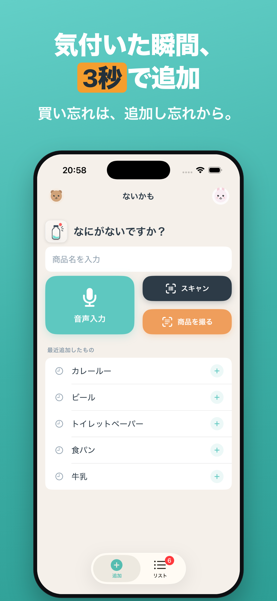
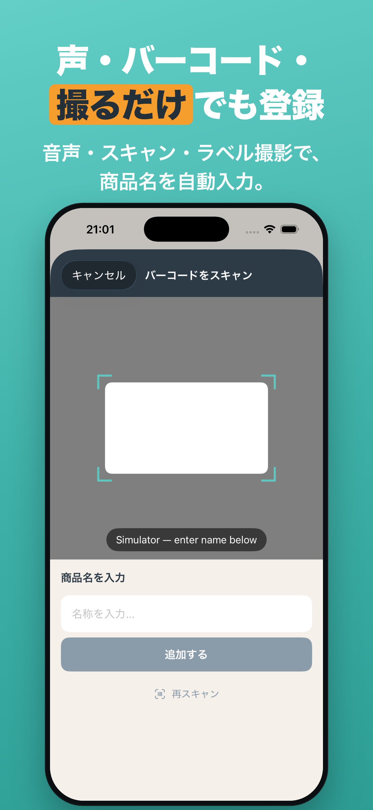
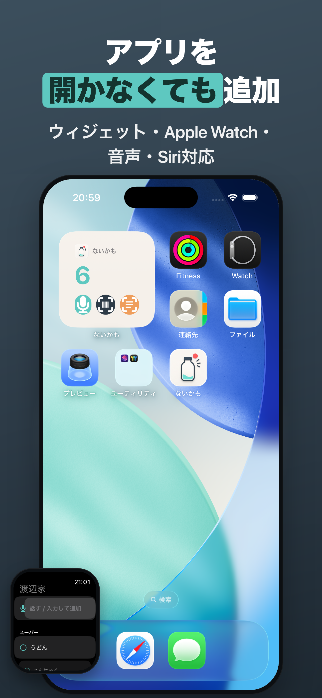
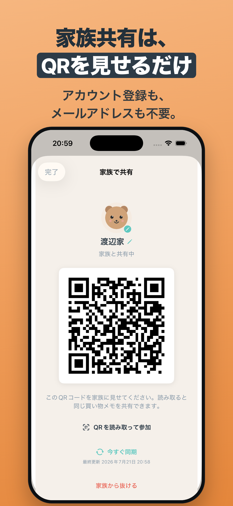
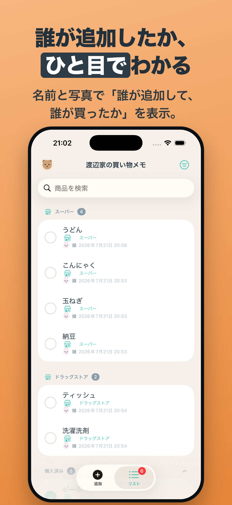

はじめに
アプリは大きく「追加」画面と「リスト」画面の2つで構成されています。下のタブ、または画面の左右端からのスワイプで切り替えられます。
- 追加：思いついた商品をすぐに登録する画面（アプリを開くと最初に表示）。
- リスト：登録した買い物メモを見て、買ったらチェックする画面。
1. 気付いたその場で追加

入力欄と候補
「追加」画面の入力欄に商品名を打つだけで登録できます。文字を入れると重複はまとめて知らせます。
- 最近追加したもの・よく使うものをワンタップで再追加。
- 登録すると「〇〇を追加しました」と表示され、すぐ取り消しもできます。
2. 声・バーコード・写真で追加

3つの入口
- 音声入力：まとめて話すと項目に分割（例:「牛乳と卵」→ 2項目）。確認画面で不要分を外して追加。
- バーコード（スキャン）：JANコードを読み取り、商品名を自動入力。見つからない時は手入力に切り替え。
- 商品を撮る：商品ラベルをカメラで撮ると、端末内で文字を読み取って候補を表示（通信不要）。
カメラ・マイクの許可は、その機能を初めて使うときにだけ求めます。
3. アプリを開かなくても追加

ホーム画面・ロック画面・Siri・Apple Watch
- ウィジェット：ホーム画面／ロック画面に置いて、音声・スキャン・商品カメラのボタンからすぐ起動。
- コントロールセンターからもワンタップで追加画面へ。
- Siri：「ないかもに追加」と話しかけると、聞き返しに答えるだけで登録。
- Apple Watch：iPhoneとペアリングした Watch で、音声／テキスト追加とチェックができます。
4. 家族とQRで共有

アカウント登録なし・QRを見せるだけ
同じ買い物メモを家族で共有できます。アカウント登録もメールアドレスも不要です。
- 「リスト」画面の左上の家族アイコンをタップ。
- 家族をつくるとQRコードが表示されます。
- もう一方の端末で同じ画面を開き、QRを読み取ると参加完了。
- 追加・購入はすぐ全員に反映されます（アプリを開いた時／引っ張って更新で同期）。
- 誰が追加して、誰が買ったかを名前と写真で表示。
- 家族の名前や、購入済みの自動削除日数は家族全員で共通になります。
5. 買い物中も迷わない

- 並べ替え：追加順／店内の売り場順／店ごと／人ごとに切り替え。
- チェック：買ったらワンタップ。間違えてもすぐ戻せます。
- 店の設定：項目に購入予定の店を設定でき、まとめて設定も可能。
- 購入済みは自動で整理され、一定期間後に自動削除（日数は設定で変更）。
6. 設定
「リスト」画面の右上メニューから設定を開けます。
- 購入済みの自動削除：7〜90日／しない（既定90日。共有中は家族共通）。
- キャラクター：自分のアイコン（動物アバター／写真）と名前を設定。共有時に「誰が」に表示。
- バージョン情報・このサポートページへのリンク。
よくある質問
共有にアカウント登録は必要ですか？
不要です。メールアドレスも登録しません。家族はQRコードを読み取るだけで参加できます。仕組み上、ランダムな家族ID（QR）を知っている端末同士で買い物リストを同期します。
オフラインでも使えますか？
はい。項目の追加・編集・チェックなど基本操作はオフラインで動作します。共有の同期は、オンラインに戻った時やアプリを開いた時に行われます。
商品が見つからない／バーコードが読めない
商品情報が見つからない場合でも、商品名を手入力してそのまま登録できます。店舗独自コードなどJANとして検索できないコードは「見つかりません」と表示し、手入力に切り替わります。
データを消したい
各項目は左スワイプ等で削除できます。共有をやめる場合は家族画面から「家族から抜ける」を選びます。アプリを削除すると、その端末内のデータは削除されます。
会社支給など制限のあるiPhoneで共有できない
ネットワーク制限のある環境では同期に失敗することがあります。その場合でもローカルでの利用（追加・チェック）は可能です。改善しない場合はお問い合わせください。
Apple Watch アプリは別に必要ですか？
いいえ。iPhone アプリに含まれており、ペアリングした Apple Watch に自動で入ります。単体アプリの追加購入は不要です。
お問い合わせ
不具合のご報告・ご要望・ご質問は、以下のメールまでお気軽にどうぞ。日本語・英語で対応します。